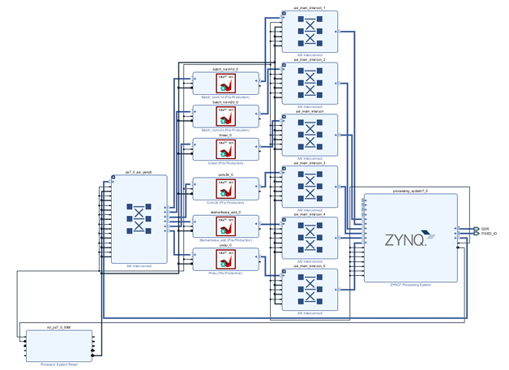

B.S. Computer Science & Information Engineering
National Dong Hwa University | Graduating Jun. 2026
My academic background bridges software algorithms and hardware implementation. I am passionate about applying cross-disciplinary knowledge to real-world semiconductor challenges, particularly in hardware-software co-design and embedded systems.
This project implements a standalone face recognition system on the PYNQ-Z1 embedded platform, combining MobileFaceNet CNN inference with FPGA hardware acceleration. The system operates entirely offline without cloud dependency, covering face registration, feature extraction, and identity verification via cosine similarity.
ARM + FPGA collaborative architecture
CNN inference via HLS-optimized IP cores
No cloud dependency, standalone operation

The system operates in a main loop, processing camera input and handling button interrupts for registration (Buttons 0, 1) and identification (Button 2). Scroll horizontally to view the full interactive flowchart.
graph TD
Start([開始]) --> Init[載入 Overlay base.bit
初始化 detector 開始攝影]
Init --> Capture[抓取辨識的照片]
Capture --> CheckCap{是否成功抓取?}
CheckCap -- 否 --> Btn3((按鈕 3))
Btn3 --> Release[釋放資源]
Release --> End([結束程式])
CheckCap -- 是 --> Gray[轉灰階並偵測人臉]
Gray --> ReadBtn{讀取硬體按鈕}
ReadBtn -- 按鈕 0 --> DetectFace{是否偵測到人臉?}
DetectFace -- 否 --> BackLoop[返回主循環]
DetectFace -- 是 --> TempPhoto[暫存照片]
TempPhoto --> BackLoop
ReadBtn -- 按鈕 1
(註冊流程) --> CheckTemp1{是否暫存照片?}
CheckTemp1 -- 否 --> BackLoop
CheckTemp1 -- 是 --> InputName[輸入使用者名稱]
InputName --> SavePhoto[儲存照片]
SavePhoto --> LoadBit1[載入 design_1.bit]
LoadBit1 --> ExtVec1[FPGA 提取人臉特徵向量]
ExtVec1 --> SaveVec[儲存人臉特徵向量至資料庫]
SaveVec --> BackLoop
ReadBtn -- 按鈕 2
(辨識流程) --> CheckTemp2{是否暫存照片?}
CheckTemp2 -- 否 --> BackLoop
CheckTemp2 -- 是 --> LoadBit2[載入 design_1.bit]
LoadBit2 --> ExtVec2[FPGA 提取當前特徵向量]
ExtVec2 --> Compare[比對儲存的特徵向量
計算餘弦相似度]
Compare --> ShowRes[顯示比對結果]
ShowRes --> BackLoop
BackLoop --> Capture
| Model | Inference Time | Accuracy | Precision | AUC | Selected |
|---|---|---|---|---|---|
| MobileFaceNet-512 | 81.38s | 81.65% | 88.96% | 0.8826 | — |
| MobileFaceNet-256 | 25.05s | 78.43% | 85.96% | 0.8580 | — |
| MobileFaceNet-128 | 19.37s | 78.97% | 84.05% | 0.8580 | ✓ |
Two key techniques applied to compute layers:
Interleaves different loop iterations within a single clock cycle.
→ Achieved Initiation Interval (II) = 1
Splits arrays into independently accessible blocks, reducing memory access congestion.